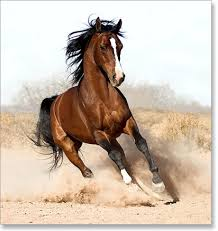
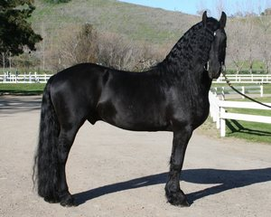

Arapski konj rasa je konja koja potiče sa Arabijskog poluostrva. Sa karakterističnim oblikom glave i visoko postavljenim repom, arapski konj je jedna od najprepoznatljivijih pasmina konja na svetu.
Мустанг је типичан „дивљи” северноамерички коњ, који води порекло од подивљалих домаћих коња које су довели у Америку шпански конкистадори. Реч Мустанг долази од шпанске речи mestengo, што је означавало шпански цех који је узгајао стоку у Кастиљи.
Frizijski konj je pasmina konja koja vodi poreklo iz Frizije, u Holandiji. Iako konformacija pasmine podseća na laganog vučnog konja, Frizijci su graciozni i brzi za svoju veličinu. Smatra se da su tokom srednjeg veka preci frizanskih konja bili u velikoj potražnji kao ratni konji širom kontinentalne Evrope.
